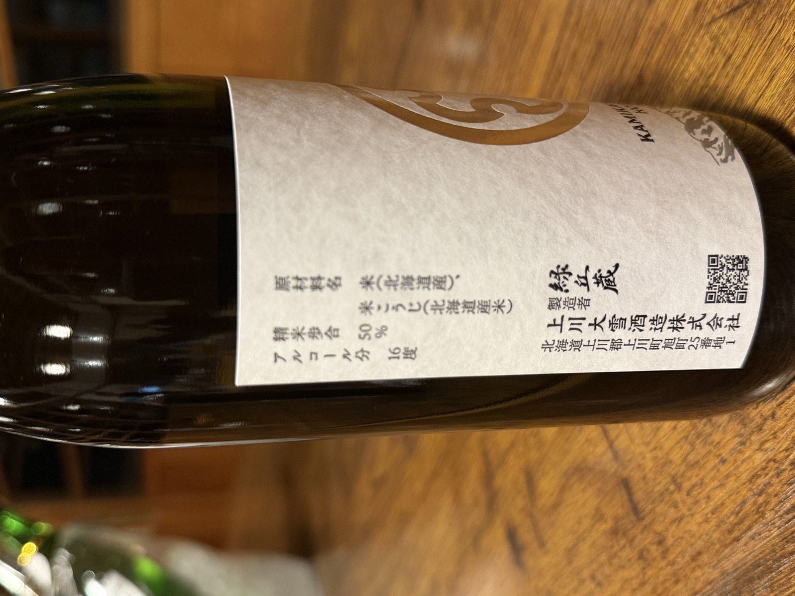
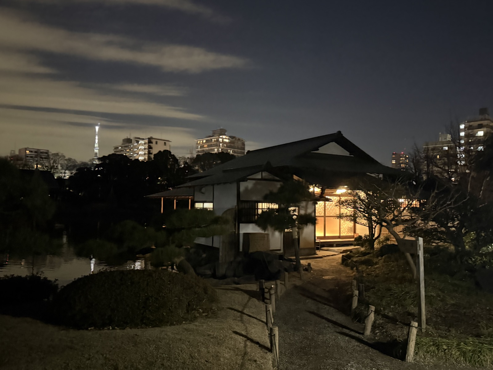
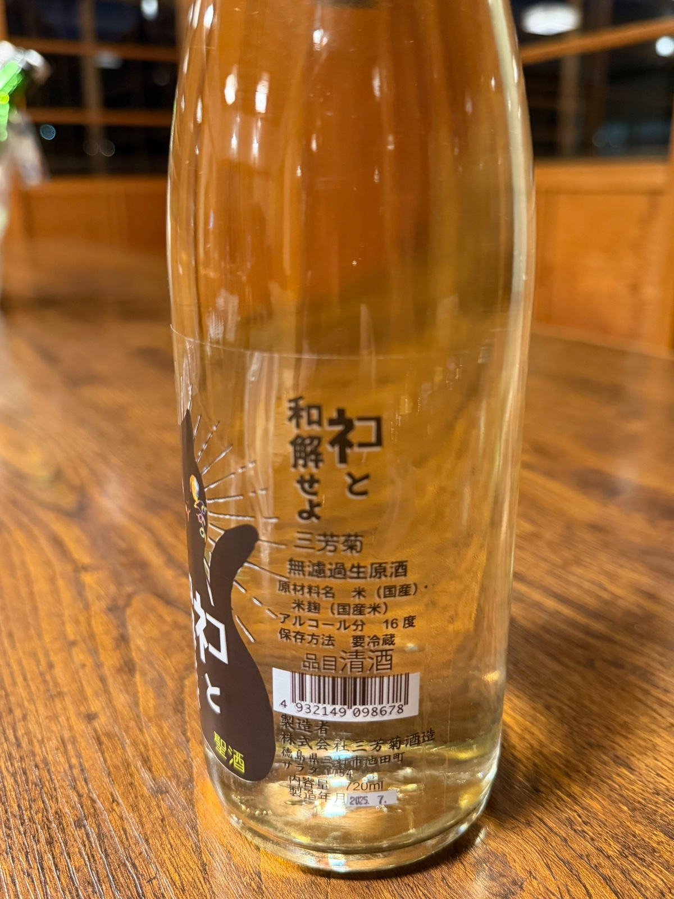
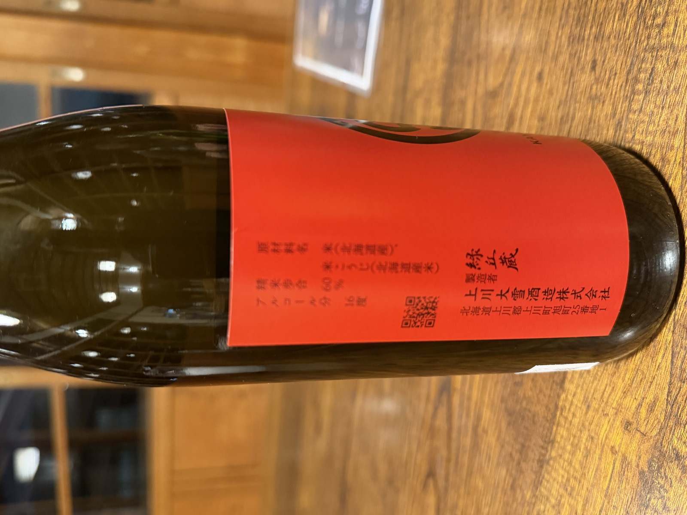
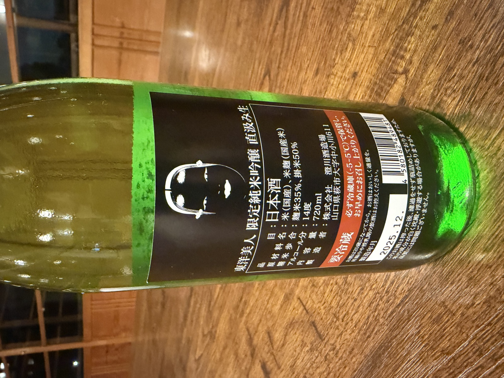
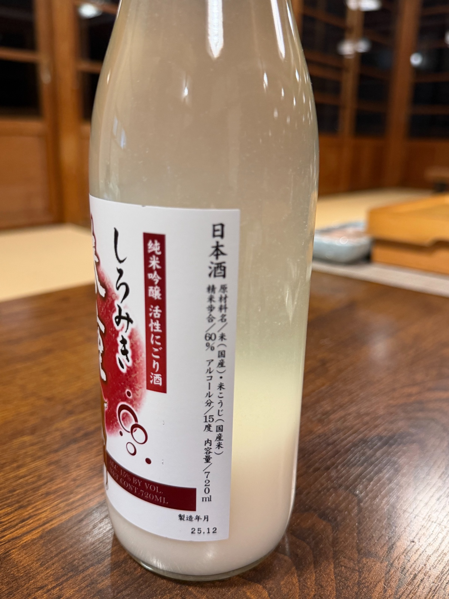
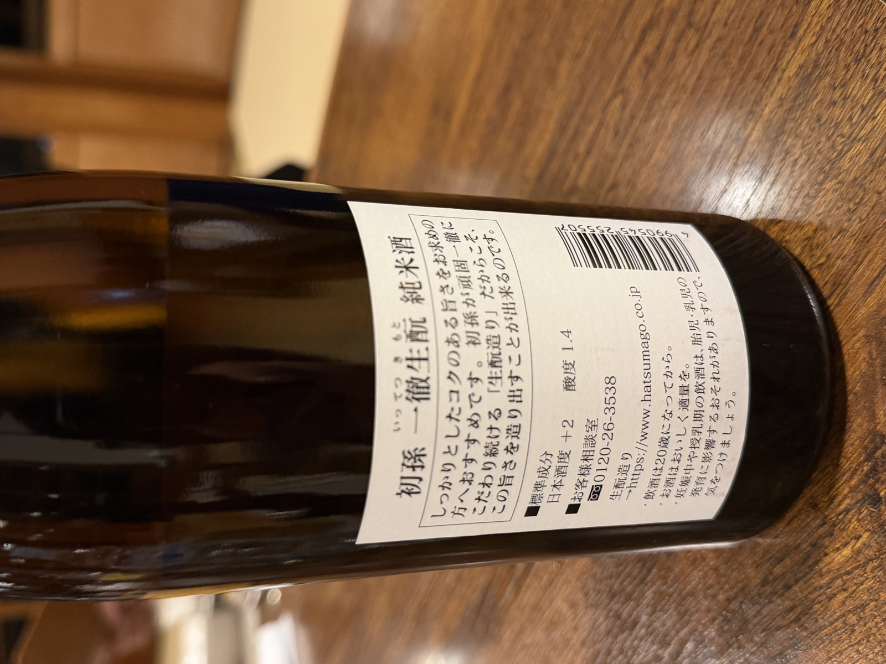
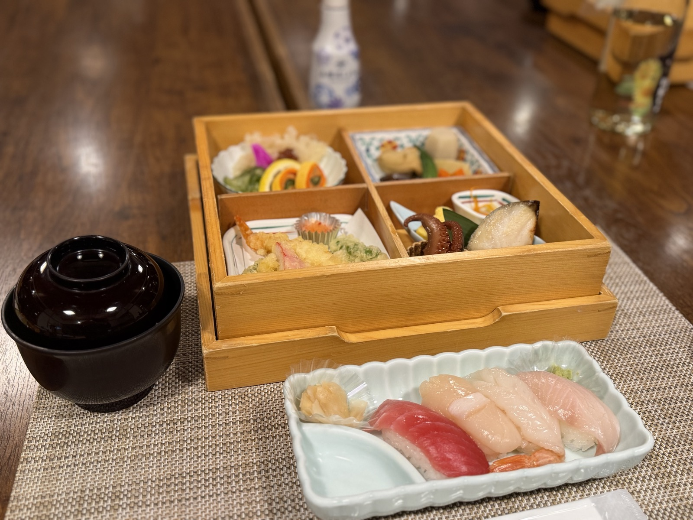

👑 最も人気 / 90.5点

開催レポート — 第3回
RESULT
全員のお酒を飲み比べ、感じたことを言葉と点数にしました。順位は価格ではなく、「誰かに飲んでほしいか」で決まります。
LINEUP & TASTING
それぞれの推しを、甘辛度・香り・濃淡・酸味・余韻の五軸で。写真は横にスワイプできます。











※ 甘辛度は数値が高いほど辛口寄り。各軸は参加者の採点（5点満点）の平均です。
GALLERY

